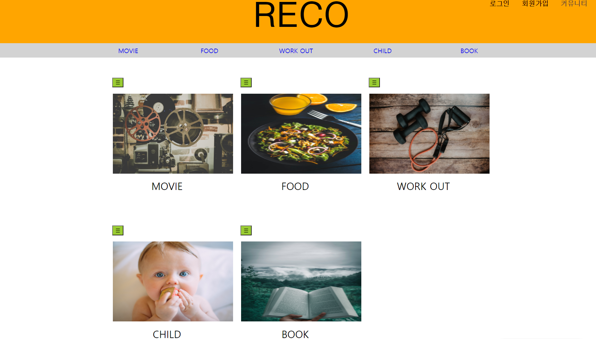
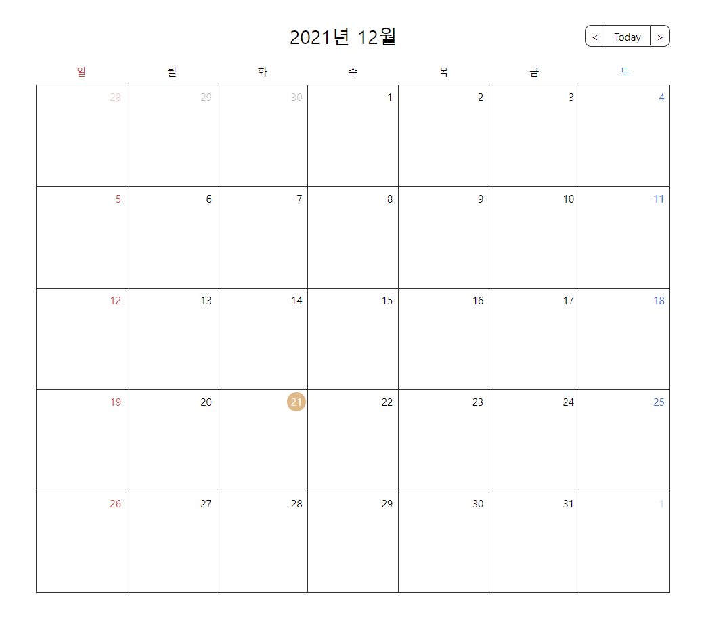
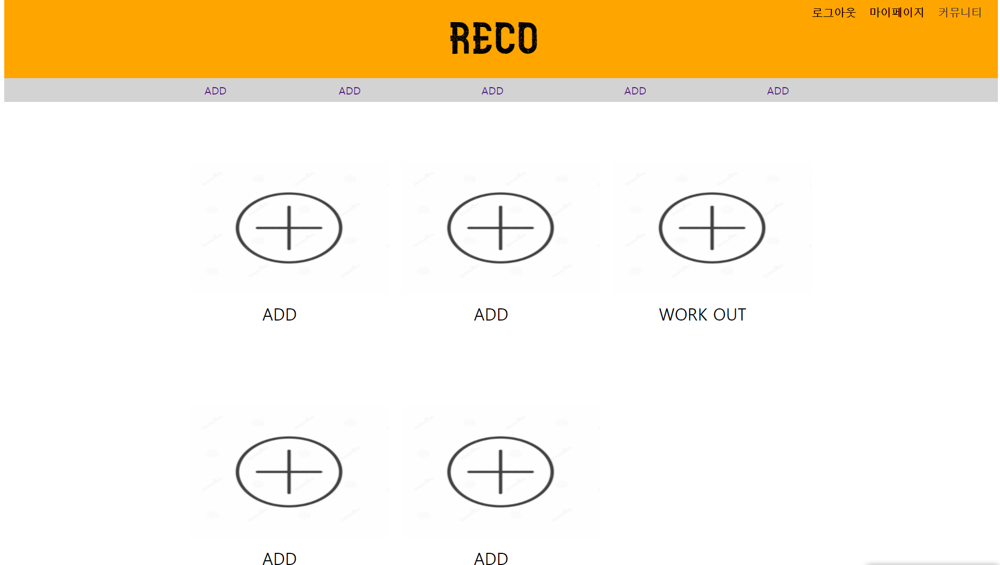

포토캘린더 만들기
원하는 종류의 포토캘린더를 자유롭게 만들고
이용할 수 있습니다. 영화/운동/아이/음식/도서 등
다양하게 이용해보세요.


최대 5개의 포토캘린더를 만들 수 있습니다.
생성, 추가, 삭제
캘린더 만들기와 수정이 매우 간단합니다.
회원가입/로그인 후 보여지는 메인 페이지
에서 네모 박스의 +버튼을 클릭하여 캘린더
를 생성할 수 있습니다. 각 캘린더들은
추가, 수정, 삭제가 가능합니다.
추억쌓기
포토캘린더를 이용하여 추억쌓기를 할 수 있습니다.
캘린더의 일정에서 사진을 추가하여 친구, 가족 연인
등의 추억을 남겨보세요.
캘린더 생성 후 일정으로 들어가 사진과 리뷰/메모를 남기면
그날의 추억이 새록새록 떠오를 겁니다.
커뮤니티를 통한 활동 가능
커뮤니티를 통해 다른 사람들과 교류를 해보세요.
회원가입/로그인 후 보여지는 메인 페이지에서
네모 박스의 +버튼을 클릭하여 캘린더
를 생성할 수 있습니다. 각 캘린더들은 추가, 수정,
삭제가 가능합니다.